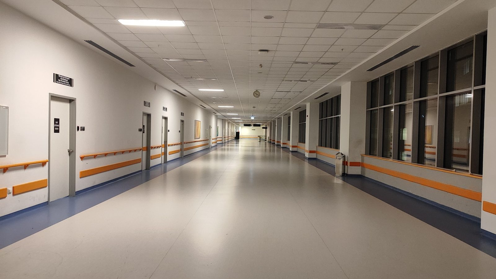

Litoral · Saúde
Litoral · SaúdeConsórcio de saúde da região abre pregão de 266,4 mil cateteres para Itapema e mais seis cidades, e o edital não diz quantos são de cada uma
A vez anterior em que o mesmo consórcio apareceu por aqui, com Itapema na lista.
O CIS-AMFRI, consórcio público de saúde que reúne Itapema e mais dez cidades da Foz do Rio Itajaí, incluiu seis linhas novas na tabela de procedimentos: cinco doses de iodoterapia, o tratamento com iodo radioativo usado depois de cirurgia de tireoide, e uma punção de mama com doppler colorido. Somadas, as seis valem R$ 25.120,00. A tabela do SUS cobre R$ 7.194,34 disso, ou 28,6%. O restante, R$ 17.925,66, aparece no documento como valor complementar, e é 71,4% da conta. A deliberação é de 22 de setembro e saiu no Diário Oficial dos Municípios na sexta-feira, 25. Os percentuais são conta nossa.
Em 30 segundos · Modo de Leitura, formato original Santa Informa
Itapema está num consórcio de saúde.
É o CIS-AMFRI, com sede em Itajaí.
São 11 cidades da região juntas.
O consórcio tem uma tabela de preços.
Ela diz quanto vale cada procedimento.
Na sexta saiu uma mudança nessa tabela.
Entraram seis linhas novas.
Cinco são de iodoterapia.
É tratamento com iodo radioativo.
Usado depois de cirurgia de tireoide.
As doses vão de 30 a 250 mCi.
A mais barata sai por R$ 3.360,00.
A mais cara, R$ 6.500,00.
A sexta linha é exame de mama.
Punção por agulha grossa com doppler.
Essa sai por R$ 680,00.
O documento separa a conta em duas partes.
Uma é o valor SUS, da tabela federal.
A outra é o valor complementar.
Somando as seis, dá R$ 25.120,00.
O SUS cobre R$ 7.194,34.
Isso é 28,6% do total.
O complementar é R$ 17.925,66.
Ou seja, 71,4% da conta.
No exame de mama a diferença é maior.
O SUS paga R$ 140,00 dos R$ 680,00.
O complementar é 79,4% ali.
É a quarta mexida na tabela em 2026.
E a de maior valor até agora.
Antes, o teto de uma linha era R$ 1.100,00.
A deliberação é ad referendum.
Ou seja, ainda vai ser referendada.
O texto não diz quem paga o complementar.
Nem como isso se divide entre as 11 cidades.
Poder PúblicoPublicada em Redação Santa Informa

O CIS-AMFRI é o Consórcio Público Interfederativo de Saúde da Região da Foz do Rio Itajaí. Ele junta 11 prefeituras, entre elas a de Itapema, para contratar serviço de saúde que a rede própria de cada cidade não dá conta de oferecer. As outras dez são Balneário Camboriú, Balneário Piçarras, Bombinhas, Camboriú, Ilhota, Itajaí, Luiz Alves, Navegantes, Penha e Porto Belo. Quem manda na tabela de preços é a Comissão Intergestores Regional, a CIR, formada pelos secretários de saúde. Na sexta-feira, 25 de setembro, saiu no Diário Oficial dos Municípios a deliberação 39/2026, assinada três dias antes, que põe seis linhas novas nessa tabela.
Cinco das seis são iodoterapia, o tratamento em que a pessoa toma iodo radioativo, em geral depois de uma cirurgia de tireoide. As doses aparecem separadas por tamanho, de 30 a 250 milicuries, e cada uma tem o seu preço: R$ 3.360,00 (30 mCi), R$ 4.380,00 (100), R$ 4.800,00 (150), R$ 5.400,00 (200) e R$ 6.500,00 (250). O valor cobre serviço hospitalar e médico. A sexta linha é a punção aspirativa de mama por agulha grossa junto com doppler colorido, por R$ 680,00, e o próprio texto avisa que esse valor não inclui a análise patológica, que é a leitura do material no laboratório.
A tabela do consórcio tem três colunas: valor SUS, valor complementar e valor total. A primeira é o que a tabela federal do SUS reembolsa. A segunda é o que precisa ser posto por cima para chegar ao preço de mercado que a pesquisa do consórcio encontrou. Somando as seis linhas, o total é de R$ 25.120,00, sendo R$ 7.194,34 de SUS e R$ 17.925,66 de complementar. Em porcentagem, 28,6% e 71,4%. A maior distância está no exame de mama, onde o SUS paga R$ 140,00 e o complementar é de R$ 540,00, ou 79,4%. A menor está na iodoterapia de 200 mCi, com 66,5%. As contas de percentual são nossas sobre os valores do documento.
Levantamos as deliberações da CIR Foz do Rio Itajaí publicadas em 2026 e chegamos a quatro que alteram essa tabela. Em 31 de março saiu a 06/2026, que ajustou duas consultas de reumatologia para R$ 200,00. Em 7 de julho, a 33/2026 incluiu a cadeia inteira da protetização auditiva, com aparelho de amplificação sonora a R$ 1.100,00 e exames de R$ 12,00 a R$ 88,00. Em 11 de agosto, a 19/2026 pôs um único item, teste de processamento auditivo, a R$ 350,00. Agora a 39/2026 entra com R$ 6.500,00 numa linha só, quase seis vezes o maior valor que a tabela tinha ganhado no ano. O documento diz que a aprovação é ad referendum, feita pelo vice-coordenador da comissão, o que significa que ainda passa pelo aval do colegiado.
O resumo de 30 segundos está no topo e a versão completa é o texto acima. Aqui ficam as três leituras da casa sobre o mesmo assunto.
Clara, a otimista
O melhor dessa notícia é o que ela revela sem dizer: tratamento de tireoide com iodo radioativo virou assunto de tabela regional. Quer dizer que a região parou de tratar isso como coisa de capital e começou a organizar preço para resolver aqui perto. Para quem mora em Itapema e já teve que pensar em Florianópolis ou Joinville, isso é encurtar estrada.
E o consórcio é um jeito esperto de uma cidade média comprar serviço caro. Sozinha, Itapema não teria volume para negociar preço de iodoterapia. Com mais dez do lado, tem. A tabela publicada é a prova de que a engrenagem está rodando.
Seu Prudêncio, o criterioso
Merece atenção a proporção. Setenta e um por cento da conta fora da tabela do SUS não é detalhe contábil, é o tamanho do esforço que sai do caixa municipal a cada atendimento. Vale acompanhar quantos atendimentos o consórcio vai autorizar por ano, porque é a multiplicação disso que aparece no orçamento de saúde lá na frente, e não o preço unitário.
Uma sugestão útil: publicar junto com a tabela a estimativa de demanda por cidade. O número existe, porque toda pesquisa de preço parte de uma quantidade. Sem ele, o gestor municipal aprova preço sem saber o compromisso, e o leitor não consegue comparar um ano com o outro. O mesmo vale para a análise patológica da punção de mama, que ficou de fora do valor e precisa estar em algum lugar.
Dito isso, há um ganho real aqui que seria injusto não registrar. A tabela está publicada, item por item, com valor aberto e código de procedimento. Isso é mais transparência do que muita compra direta de prefeitura oferece, e permite exatamente o tipo de conferência que fizemos aqui. O consórcio acertou em publicar assim.
Caco, o sarcástico
Descobri hoje que existe uma tabela em que o SUS paga R$ 140,00 de um exame de R$ 680,00 e alguém tem que arrumar os outros R$ 540,00. A tabela chama essa parte de complementar. É um adjetivo corajoso para quem fica com quase 80% da conta.
Também aprendi que iodoterapia se vende por milicurie, como café por quilo. De 30 a 250, com preço crescente. Só que ninguém escolhe o tamanho, quem escolhe é o médico, o que estraga a comparação mas melhora o tratamento.
No fim, é boa notícia. A região se juntou, pesquisou preço e publicou tudo com código e centavo. Tá caro, mas tá escrito.
Fontes: os seis procedimentos, os códigos e os valores de SUS, complementar e total estão na Deliberação ad referendum nº 39/2026 da CIR Foz do Rio Itajaí, assinada em Itajaí em 22 de setembro de 2026 pelo vice-coordenador Rodrigo Medeiros e publicada no Diário Oficial dos Municípios de Santa Catarina em 25 de setembro de 2026, que abrimos e lemos por inteiro. A lista das 11 cidades do consórcio está no rodapé do mesmo documento. As deliberações anteriores que mexeram na tabela em 2026 são a 06/2026, publicada em 31 de março, a 33/2026, publicada em 7 de julho, e a 19/2026, publicada em 11 de agosto. O levantamento das quatro, a comparação entre elas e todos os percentuais são conta nossa sobre os valores publicados. O consórcio e a sua relação com Itapema já apareceram por aqui em Consórcio de saúde da região abre pregão de 266,4 mil cateteres para Itapema e mais seis cidades, de 21 de setembro de 2026. A informação de que não encontramos o valor repassado por Itapema ao CIS-AMFRI em 2026 é registro do que procuramos nesta data, não afirmação de que o dado não exista.
Litoral · SaúdeA vez anterior em que o mesmo consórcio apareceu por aqui, com Itapema na lista.
Como a rede de saúde de Itapema se organiza por porta de entrada.
Outro serviço público da Costa Esmeralda medido pelo que sai do caixa municipal.